Grille politique 2027
Filtres
Présidentielle 2027
Toute la politique
★ Favoris
Catégorie
Plateforme
Candidat
Tous
Tout réafficher
Favoris (☆ sur une émission pour en ajouter)
Notifications des favoris
Cette page a besoin de JavaScript pour afficher la grille.